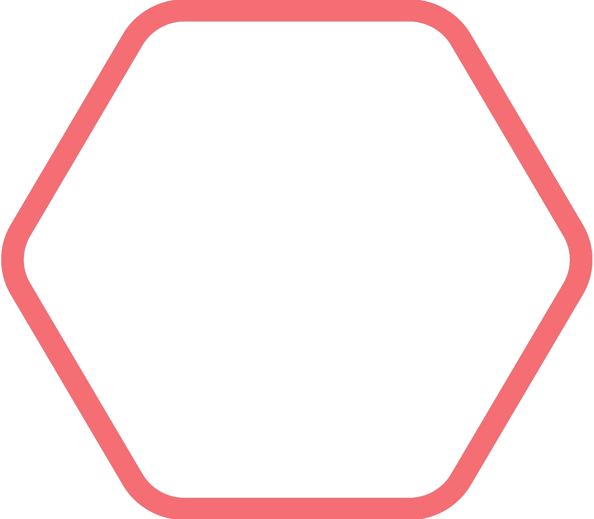

活動内容
日本最大級の学園祭である早稲田祭をつくるため、資金調達からその資金の管理、祭の主要企画の立案・運営、早稲田祭に企画を出す参加団体・参加者の方々との調整まで、さまざまな活動を行っています。その他にも、早稲田祭の広報、当日の装飾物の制作、祭のさらなる進化を目指した企画や取り組みの立案・運営など、1年をかけて早稲田祭を準備しています。
祭当日も、会場内外の警備や案内、運営スタッフ自体の人員や物の管理、企画の運営など、運営スタッフとしての活動は本当に多岐にわたります。
そのため、運営スタッフとしてはひとつの団体ですが、その中で8つの「局」という部署に分かれて活動しています！
詳しい局の種類や活動内容はこちらのページをご覧ください！